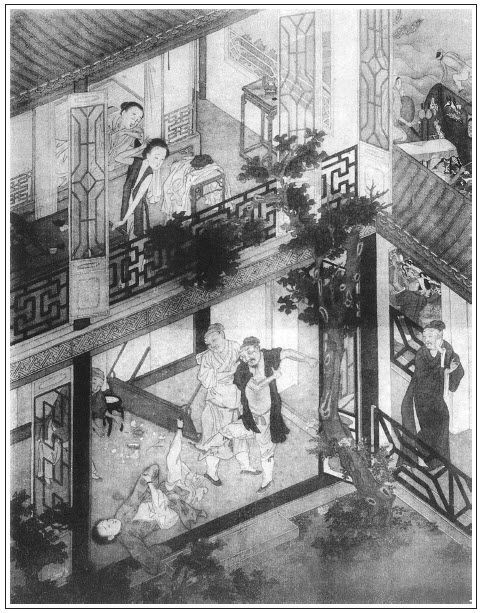

張回此回乃完陳敬濟一人之案，其取禍被殺，總是不肯改過，故用以艾灸之，則愛姐乃所以守節也。且欲一部內之各色人等皆改過，故又以愛姐結於此，且下及於一百回。總之作者著此一書，以為好色貪財之病，下一大大火艾也。
詞曰：
白雲山，紅葉樹，閱盡興亡，一似朝還暮。多少夕陽芳草渡，潮落潮生，還送人來去。
阮公途，楊子路，九折羊腸，曾把車輪誤。記得寒蕪嘶馬處，翠官銀箏，夜夜歌樓曙。張夾不知是聲，是淚，是血。
──右調《蘇幕遮》

話說陳敬濟，過了兩日，到第三日，卻是五月二十日他的生日，後廳整置酒餚，與他上壽，閤家歡樂了一日。次日早辰，敬濟說：「我一向不曾往河下去，今日沒事，去走一遭，一者和主管算帳，二來就避炎暑，走走便回。」春梅分付：「你去坐一乘轎子，少要勞碌。」交兩個軍牢抬著轎子，小姜兒跟隨，逕往河下在酒樓店中來。
一路無詞，午後時分到了，下轎進入裡面。兩個主管齊來參見，說：「官人貴體好些？」敬濟道：「生受二位夥計掛心。」他一心只在韓愛姐身上，坐了一回便起身，分付主管：「查下帳目，等我來算。」就轉身到後邊。八老又早迎見，報與王六兒夫婦。韓愛姐正在樓上，憑欄盼望，揮毫作詩遣懷。忽報陳敬濟來了，連忙輕移蓮步，款蹙湘裙，走下樓來。母子面上堆下笑來迎接，說道：「官人，貴人難見面，那陣風兒吹你到俺這裡？」敬濟與他母子作了揖，同進閣兒內坐定。少頃，王六兒點茶上來。吃畢茶，愛姐道：「請官人到樓上奴房內坐。」敬濟上的樓來，兩個如魚得水，似膝投膠，無非說些深情密意的話兒。愛姐硯台底下，露出一幅花箋，敬濟取來觀看。愛姐便說：「此是奴家盼你不來，作得一首詩，以消遣悶懷，恐污官人貴目。」敬濟念了一遍，上寫著：
倦倚繡床愁懶動，閒垂錦帳鬢鬟低。
玉郎一去無消息，一日相思十二時。
敬濟看了，極口稱羨不已。不一時，王六兒安排酒餚上樓，撥過鏡架，就擺在梳妝卓上。兩個並坐，愛姐篩酒一杯，雙手遞與敬濟，深深道個萬福，說：「官人一向不來，妾心無時不念。前八老來，又多謝盤纏，舉家感之不盡。」敬濟接酒在手，還了喏，說：「賤疾不安，有失期約，姐姐休怪。」酒盡，也篩一杯敬奉愛姐吃過，兩個坐定，把酒來斟。王六兒、韓道國上來，也陪吃了幾杯，各取方便下樓去了，繡眉極大法門。教他二人自在吃幾杯，敘些闊別話兒。良久，吃得酒濃時，情興如火，免不得再把舊情一敘。交歡之際，無限恩情。穿衣起來，洗手更酌，又飲數杯。醉眼朦朧，餘興未盡。這小郎君，一向在家中不快，又心在愛姐，一向未與渾家行事。今日一旦見了情人，未肯一次即休。正是生死冤家，五百年前撞在一處，敬濟魂靈都被他引亂。少頃，情竇復起，又干一度。張夾總為死期一引。自覺身體睏倦，打熬不過，午飯也沒吃，倒在床上就睡著了。
也是合當禍起，不想下邊販絲綿何官人來了，王六兒陪他在樓下吃酒。韓道國出去街上買菜蔬、餚品、果子來配酒。兩個在下邊行房。落後韓道國買將果菜來，三人又吃了幾杯。約日西時分，只見洒家店坐地虎劉二，吃的酩酊大醉，嚲開衣衫，露著一身紫肉，提著拳頭走來酒樓下，大叫：張夾又是劉二，特特與上文遙對作章法。「採出何蠻子來！」諕的兩個主管見敬濟在樓上睡，恐他聽見，慌忙走出櫃來，向前聲諾，說道：「劉二哥，何官人並不曾來。」這劉二那裡依聽。大扠步撞入後邊韓道國屋裡，一手把門簾扯去半邊，看見何官人正和王六兒並肩飲酒，心中大怒，便罵何官人：「賊狗男女，我㒲你娘！張夾今日之官人，即昔日之道士一稿，敬濟安得不惱？那裡沒尋你，卻在這裡。你在我店中，佔著兩個粉頭，幾遭歇錢不與，又塌下我兩個月房錢，卻來這裡養老婆！」繡眉掛炭部的看樣。那何官人忙出來道：「老二你休怪，我去罷。」那劉二罵道：「去張夾一字，如聞其聲。你這狗㒲的！」不防颼的一拳來，正打在何官人面上，登時就青腫起來。那何官人也不顧，逕奪門跑了。劉二將王六兒酒卓，一腳登翻，家活都打了。王六兒便罵道：「是那裡少死的賊殺才！無事來老娘屋裡放屁。老娘不是耐驚耐怕兒的人！」繡眉罵搗鬼的英風猶在。張夾有敬濟故也。被劉二向前一腳，跺了個仰八叉，罵道：「我㒲你淫婦娘！張夾今日之六兒，即昔日之金寶也，敬濟安得不惱？你是那裡來的無名少姓私窠子？不來老爺手裡報過，許你在這酒店內趁熟？還與我搬去！若搬遲，須吃我一頓好拳頭。」那王六兒道：「你是那裡來的光棍搗子？老娘就沒了親戚兒？張夾有敬濟故也。許你便來欺負老娘，要老娘這命做甚麼？」一頭撞倒哭起來。劉二罵道：「我把淫婦腸子也踢斷了，你還不知老爺是誰哩！」這裡喧亂，兩邊鄰舍並街上過往人，登時圍看約有許多。有知道的旁邊人說：「王六兒，你新來不知，他是守備老爺府中管事張虞候的小舅子，有名坐地虎劉二。在洒家店住，專一是打粉頭的班頭，降酒店的領袖。你讓他些兒罷，休要不知利害。這地方人，誰敢惹他！」王六兒道：「還有大似他的，采這殺才做甚麼？」張夾固自有敬濟在也。陸秉義見劉二打得凶，和謝胖子做好做歹，把他勸的去了。
陳敬濟正睡在床上，聽見樓下嚷亂，便起來看，時天已日西時分，問：「那裡嚷亂？」那韓道國不知走的往那裡去了，只見王六兒披髮垢面上樓，如此這般告訴說：「那裡走來一個殺才搗子，諢名喚坐地虎劉二，在洒家店住，說是咱府裡管事張虞候小舅子。因尋酒店，無事把我踢打，罵了恁一頓去了。又把家活酒器都打得粉碎。」一面放聲大哭起來。敬濟就叫上兩個主管去問。張夾問者非不信六兒，蓋欲問明劉二也。兩個主管隱瞞不住，只得說：「是府中張虞候小舅子劉二，來這裡尋何官人討房錢，見他在屋裡吃酒，不由分說，把簾子扯下半邊來，打了何官人一拳，諕的何官人跑了。又和老韓娘子兩個相罵，踢了一交，烘的滿街人看。」敬濟聽了，便曉得是前番做道士，被他打的劉二了。張夾所以必問二主管。欲要聲張，又恐劉二潑皮行兇，一時鬥他不過。張夾恐出前丑耳。又見天色晚了，因問：「劉二那廝如今在那裡？」主管道：「被小人勸他回去了。」敬濟安撫王六兒道：「你母子放心，有我哩，不妨事。你母子只情住著，我家去自有處置。」主管算了利錢銀兩遞與他，打發起身上轎，伴當跟隨。剛趕進城來，天已昏黑，心中甚惱。到家見了春梅，交了利息銀兩，歸入房中。
一宿無話。到次日，心心唸唸要告春梅說，展轉尋思：「且住，等我慢慢尋張勝那廝幾件破綻，亦發教我姐姐對老爺說了，斷送了他性命。繡眉此念大惡，故受其害。張夾不如此敬濟不死。叵耐這廝，幾次在我身上欺心，敢說我是他尋得來，知我根本出身，量視我禁不得他。」正是：
冤仇還報當如此，機會遭逢莫遠圖。
踏破鐵鞋無覓處，得來全不費工夫。
一日，敬濟來到河下酒店內，見了愛姐母子，說：「外日吃驚。」又問陸主管道：「劉二那廝可曾走動？」陸主管道：「自從那日去了，再不曾來。」又問韓愛姐：「那何官人也沒來行走？」愛姐道：「也沒曾來。」這敬濟吃了飯，算畢帳目，不免又到愛姐樓上。兩個敘了回衷腸之話，干訖一度出來，因閒中叫過量酒陳三兒近前，如此這般，打聽府中張勝和劉二幾樁破綻。這陳三兒千不合，萬不合，說出張勝包佔著府中出來的雪娥，在洒家店做表子。張夾所以必寫雪娥為娼，接張勝等事，蓋總為死敬濟故耳。劉二又怎的各處巢窩，加三討利，舉放私債，逞著老爺名壞事。繡眉如此人極其該處。讀者須知，不可以敬濟之成敗論也。敬濟聽記在心，又與了愛姐二三兩盤纏，和主管算了帳目，包了利息銀兩，作別騎頭口來家。
閒話休題。一向懷意在心，一者也是冤家相湊，二來合當禍起。不料東京朝中徽宗天子，見大金人馬犯邊，搶至腹內地方，聲息十分緊急。天子慌了，與大臣計議，差官往北國講和，情願每年輸納歲幣，金銀彩帛數百萬。一面傳位與太子登基，改宣和七年為靖康元年，宣帝號為欽宗。皇帝在位，徽宗自稱太上道君皇帝，退居龍德宮。朝中升了李綱為兵部尚書，分部諸路人馬。種師道為大將，總督內外軍務。
一日，降了一道敕書來濟南府，升周守備為山東都統制，提調人馬一萬，前往東昌府駐紮，會同巡撫都御史張叔夜，防守地方，阻擋金兵。守備領了敕書，不敢怠慢，一面叫過張勝、李安兩個虞候近前分付，先押兩車箱馱行李細軟器物家去。原來在濟南做了一年官，也撰得巨萬金銀。都裝在行李馱箱內，委託二人押到家中：「交割明白，晝夜巡風仔細。我不日會同你巡撫張爺，調領四路兵馬，打清河縣起身。」二人當日領了鈞旨，打點車輛，起身先行。一路無詞。有日到了府中，交割明白，二人晝夜內外巡風，張夾先放此句在此。不在話下。
卻說陳敬濟見張勝押車輛來家，守備升了山東統制，不久將到，正欲把心腹中事要告訴春梅，等守備來家，發露張勝之事。不想一日因渾家葛翠屏往娘家回門住去了，他獨自個在西書房寢歇，春梅驀進房中看他。見丫鬟跟隨，兩個就解衣在房內雲雨做一處。不防張勝搖著鈴，巡風過來，繡眉冤家。到書院角門外，聽見書房內彷彿有婦人笑語之聲，就把鈴聲按住，慢慢走來窗下竊聽。原來春梅在裡面與敬濟交姤。聽得敬濟告訴春梅說：「叵耐張勝那廝，好生欺壓於我，說我當初虧他尋得來，幾次在下人前敗壞我。昨日見我在河下開酒店，一徑使小舅子坐地虎劉二，來打我的酒店，把酒客都打散了。專一倚逞他在姐夫麾下，在那裡開巢窩，放私債，又把雪娥隱佔在外奸宿，張夾只此一語，使春梅固住手不得，而張勝亦住手不得也。只瞞了姐姐一人眼目。我幾次含忍，不敢告姐姐說，趁姐夫來家，若不早說知，往後我定然不敢往河下做買賣去了。」春梅聽了，說道：「這廝恁般無禮。雪娥那賤人，我賣了他，如何又留住在外？」敬濟道：「他非是欺壓我，就是欺壓姐姐一般。」春梅道：「等他爺來家，交他定結果了這廝。」繡眉罪不至此，太毒。
常言道：「隔牆須有耳，窗外豈無人。」兩個只管在內說，卻不知張勝窗外聽得明明白白，口中不言，心內暗道：「此時教他算計我，不如我先算計了他罷。」繡眉張勝此舉，似有鬼物憑之。一面撇下鈴，走到前邊班房內，取了把解腕鋼刀，說時遲，那時快，在石上磨了兩磨，張夾便捷之甚。走入書院中來。不想天假其便，還是春梅不該死於他手。張夾若便結果春梅，後文愛姐諸人，總難收煞矣。忽被後邊小丫鬟蘭花兒，慌慌走來叫春梅，報說：「小衙內金哥兒忽然風搖倒了，快請奶奶看去。」諕的春梅兩步做一步走，奔了後房中看孩兒去了。剛進去了，那張勝提著刀子，逕奔到書房內，不見春梅，只見敬濟睡在被窩內。見他進來，叫道：「阿呀，你來做甚麼？」張勝怒道：「我來殺你！繡旁爽利。張夾四字妙答，天下未有如此答人問者。你如何對淫婦說，倒要害我？我尋得你來不是了？反恩將仇報！常言『黑頭蟲兒不可救，救之就要吃人肉』，休走，吃我一刀子！明年今日是你死忌！」繡眉伶伶俐俐，斬斬截截，張勝作事，大類武松。那敬濟光赤條身子，沒處躲，只摟著被，吃他拉過一邊，張夾寫得活現。向他身就紮了一刀子來。紮著軟肋，鮮血就邈出來。張夾寫得活現，比金蓮受刃何如？這張勝見他掙扎，復又一刀去，攮著胸膛上，動彈不得了。一面采著頭髮，把頭割下來，繡眉試觀張勝前後始終之局，西門氏之豫讓也。正是：
三寸氣在千般用，一日無常萬事休。
可憐敬濟青春不上三九，死於非命。張勝提刀，繞屋裡床背後，尋春梅不見，大扠步徑望後廳走。走到儀門首，只見李安背著牌鈴，在那裡巡風。張夾所以先插巡風，必雲張、李二人。一見張勝凶神也似提著刀跑進來，便問：「那裡去？」張勝不答，只顧走，被李安攔住。張勝就向李安戳一刀來。李安冷笑，說道：「我叔叔有名山東夜叉李貴，我的本事不用借。」張夾寫玉樓時已伏此人，可知其用意處不在李安，而在真定棗強之可貴可安之理也。早飛起右腳，只聽忒楞的一聲，把手中刀子踢落一邊。繡眉李安臨事從容。張勝急了，兩個就揪采在一處，被李安一個潑腳，跌番在地，解下腰間纏帶登時綁了。嚷的後廳春梅知道，說：「張勝持刀入內，小的拿住了。」那春梅方救得金哥甦醒，聽言大驚失色。走到書院內，見敬濟已被殺死在房中，一地鮮血橫流，不覺放聲大哭。一面使人報知渾家。葛翠屏慌奔家來，看見敬濟殺死，哭倒在地，不省人事。張夾寫翠屏，正映愛姐後文。被春梅扶救甦醒過來。拖過屍首，買棺材裝殯。把張勝墩鎖在監內，單等統制來家處治這件事。
那消數日，只見軍情事務緊急，兵牌來催促。周統制調完各路兵馬，張巡撫又早先往東昌府那裡等候取齊。統制到家，春梅把殺死敬濟一節說了。李安將凶器放在面前，跪稟前事。統制大怒，坐在廳上，提出張勝，也不問長短，張夾是文字閃避處。喝令軍牢，五棍一換，打一百棍，登時打死。隨馬上差旗牌快手，往河下捉拿坐地虎劉二，鎖解前來。孫雪娥見拿了劉二，恐怕拿他，走到房中，自縊身死。張夾結雪娥。夫敬濟已死，要雪娥何益哉？芰莖終因雪敗，又是寓意。旗牌拿劉二到府中，統制也分付打一百棍，當日打死。繡眉此回一舉而除數害，可喜，可喜。烘動了清河縣，大鬧了臨清州。正是：
平生作惡欺天，今日上蒼報應。
有詩為證：
為人切莫用欺心，舉頭三尺有神明。
若還作惡無報應，天下兇徒人食人。
當時統制打死二人，除了地方之害。分付李安將馬頭大酒店還歸本主，張夾如此結酒店，寫得可畏之甚。把本錢收算來家。分付春梅在家，與敬濟修齋做七，打發城外永福寺葬埋。繡眉雖不得金蓮同穴，而相去咫尺，敬濟雖死，花星猶照。張夾惟敬濟、金蓮直入永福，寓意甚深。留李安、周義看家，把周忠、周仁帶去軍門答應。春梅晚夕與孫二娘，置酒送餞，不覺簇地兩行淚下，說：「相公此去，未知幾時回還，出戰之間，須要仔細。番兵猖獗，不可輕敵。」統制道：「你每自在家清心寡慾，好生看守孩兒，不必憂念。我既受朝廷爵祿，盡忠報國。至於吉凶存亡，付之天也。」繡眉丈夫語，忠臣語。張夾不謂此書中有此數語。囑咐畢，過了一宿。次日，軍馬都在城外屯集，等候統制起程。一路無詞。有日到了東昌府下，統制差一面令字藍旗，打報進城。巡撫張叔夜，聽見周統制人馬來到，與東昌府知府達天道出衙迎接。至公廳敘禮坐下，商議軍情，打聽聲息緊慢。駐馬一夜，次日人馬早行，往關上防守去了。不在話下。
卻表韓愛姐母子，在謝家樓店中聽見陳敬濟已死，愛姐晝夜只是哭泣，茶飯都不吃，一心只要往城內統制府中，見敬濟屍首一見，死也甘心。繡眉難得。張夾此等艾火，可炙金蓮對武大，瓶兒對子虛等病。父母、旁人百般勸解不眾。韓道國無法可處，使八老往統制府中打聽，敬濟靈柩已出了殯，埋在城外永福寺內。這八老走來，回了話。愛姐一心要到他墳上燒紙，哭一場，也是和他相交一場。做父母的只得依他。雇了一乘轎子，到永福寺中，問長老葬於何處。長老令沙彌引到寺後，繡旁亦是寺後。張旁亦是寺後。新墳堆便是。這韓愛姐下了轎子，到墳前點著紙錢，道了萬福，叫聲：「親郎我的哥哥！張夾是敬濟哭金蓮一樣。奴實指望和你同諧到老，誰想今日死了！」放聲大哭，哭的昏暈倒了，頭撞於地下，就死過去了。繡眉的的貞心，千古無兩。張夾此等艾火可炙金蓮燒靈、辭靈，瓶兒燒靈等病。慌了韓道國和王六兒，向前扶救，叫姐姐，叫不應，越發慌了。
不想那日，正是葬的三日，春梅與渾家葛翠屏坐著兩乘轎子，伴當跟隨，抬三牲祭物，來與他暖墓燒紙。看見一個年小的婦人，穿著縞素，頭戴孝髻，哭倒在地。一個男子漢和一中年婦人，摟抱他扶起來，又倒了，張夾寫哭，如此寫。不省人事，吃了一驚。因問那男子漢是那裡的，這韓道國夫婦向前施禮，把從前已往話，告訴了一遍：「這個是我的女孩兒韓愛姐。」春梅一聞愛姐之名，就想起昔日曾在西門慶家中會過，又認得王六兒。韓道國悉把東京蔡府中出來一節，說了一遍：「女孩兒曾與陳官人有一面之交，不料死了。他只要來墳前見他一見，燒紙錢，不想到這裡，又哭倒了。」當下兩個救了半日，這愛姐吐了口粘痰，方才甦醒，尚哽咽哭不出聲來。痛哭了一場起來，與春梅、翠屏插燭也似磕了四個頭，繡旁可憐。說道：「奴與他雖是露水夫妻，他與奴說山盟，言海誓，情深意厚，實指望和他同諧到老，張夾此等艾火可炙一部淫婦、淫聲等病。誰知天不從人願，一旦他先死了，撇得奴四脯著地。他在日曾與奴一方吳綾帕兒，上有四句情詩。知道宅中有姐姐，奴願做小，倘不信──」向袖中取出吳綾帕兒來，上面寫詩四句，春梅同葛翠屏看了。詩云：
吳綾帕兒織回紋，灑翰揮毫墨跡新。
寄與多情韓五姐，永諧鸞鳳百年情。繡眉此詩不及愛姐多多。
愛姐道：「奴也有個小小鴛鴦錦囊，與他佩載在身邊。兩面都扣繡著並頭蓮，每朵蓮花瓣兒一個字兒：寄與情郎陳君膝下。」張夾此等艾火，可炙一部送物事等病。春梅便問翠屏：「怎的不見這個香囊？」翠屏道：「在底褲子上拴著，奴替他裝殮在棺槨內了。」
當下祭畢，讓他母子到寺中擺茶飯，勸他吃了些。王六兒見天色將晚，催促他起身，他只顧不思動身。一面跪著春梅、葛翠屏哭說：「奴情願不歸父母，同姐姐守孝寡居。明日死，傍他魂靈，也是奴和他恩情一場，說是他妻小。」說著那淚如泉湧。繡眉益發難得。張夾此等艾火，可炙一部淫婦紊亂綱常等病。翠屏只顧不言語。春梅便說：「我的姐姐，只怕年小青春，守不住，卻不誤了你好時光。」愛姐便道：「奶奶說那裡話？奴既為他，雖刳目斷鼻也當守節，誓不再配他人。」張夾此等艾火，可炙一切姦夫淫婦、亂臣賊子、盜殺邪淫等病。囑付他父母：「你老公婆回去罷，張夾此等艾火，可炙一切溺愛癡愚等病。我跟奶奶和姐姐府中去也。」那王六兒眼中垂淚，哭道：「我承望你養活俺兩口兒到老，才從虎穴龍潭中奪得你來。今日倒閃賺了我。」那愛姐口裡只說：「我不去了。你就留下我，到家也尋了無常。」繡眉敬濟生平狂悖薄劣，死未罄辜，而有愛姐、翠屏為之誓死靡慝。涼德而受美報，天下事盡多不可解者如此。那韓道國因見女兒堅意不去，和王六兒大哭一場，灑淚而別，回上臨清店中去了。這韓愛姐同春梅、翠屏，坐轎子往府裡來。那王六兒一路上悲悲切切，只是捨不的他女兒，哭了一場又一場。繡眉錢樹子去矣，安得不哭。張夾又為湖州愛河作因。那韓道國又怕天色晚了，雇上兩疋頭口，望前趕路。正是：
馬遲心急路途窮，身似浮萍類轉蓬。
只有都門樓上月，照人離恨各西東。
文回文禹門云：作者以孝哥為西門慶化身，我則以敬濟為西門慶分身。西門慶不死於刃而死於病，終屬憾事，故以敬濟補其缺。蓋敬濟即西門慶影子，張勝即武松影子，其間有兩犯而不同者，有相映而不異者，此作者之變化，全在看官之神而明者也。
西門慶死於兩個六兒之手，前已詳告之矣。此一回敬濟因愛姐之情書而往，綢繆之餘，而逗其劉二舊恨，自臨清回清河，亦如西門慶自韓家歸花園也。春梅乘翠屏歸家而至，商量之際，頓起張勝殺機，是敬濟死於兩個六兒之女之手。釁起於愛姐之室，命喪於春梅之語，又何異大戰王六兒家，精洩於金蓮之口乎？是母是女，此翁此婿，愛姐即是王六兒，春梅即是潘金蓮，敬濟即是西門慶。非然者，死此二人，何必定用此四人哉？惟武松為兄報仇，故不愧為英雄，張勝為己洩忿，故不免為兇徒耳，斯又不異之異也。